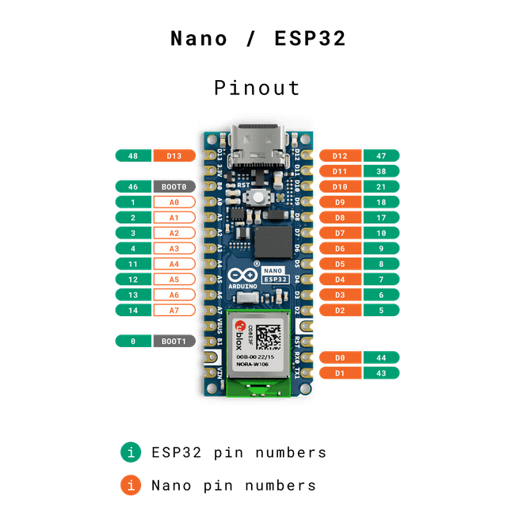

Micropython
Programación fácil y para todos de microcontroladores
Sobre mí Nekmo

Programador Python |
Micropython
Microcontroladores
¿Qué son?
Ventajas
🤏 Pequeños
🤑 Económicos
🪫 Bajo consumo
Desventajas
🐢 Poco potentes
😓 Programación más compleja
Algunos usos
☁️ Domótica
🤖 Robótica
🔌 Electrónica
🚧 Prototipos
...
GIF robot
Micropython
Variantes
ESP8266/ESP32
🤑 Muy económico
😄 Múltiples variantes
👥 Gran comunidad
Raspberry Pi Pico
💸 Económico
🔨 Gran soporte
📚 Bien documentado
ESP32
Dinero
Características
💪 Doble núcleo
Conectividad WiFi
📡 Conectividad Bluetooth
🔌 Múltiples pines GPIO
📟 ADC / DAC
Primeros pasos
⚡ Flashear desde el navegador o por terminal
📝 IDE web (ViperIDE) o local (Thonny)
TODO: instalador de micropython en presentación
Demos
Encender un led
Identificar los pines
{kind=link}

Conectar el led
Código led
Led analógico
GIF luces LED
Conectar un botón
Código botón
GIF recreativa
Conectar un LED RGB
Código LED RGB
GIF cientos de cables
Protocolos de comunicación
1️⃣ OneWire (1 pin)
2️⃣ I2C (2 pines)
3️⃣ SPI (3/4+ pines)
📟 UART (2+ pines)
Conectar un led WS2812
Código LED WS2812
I2C
Conectar sensor y pantalla I2C
Código sensor y pantalla I2C
WiFi y bluetooth
Código coche
Demo coche
¡Muchas gracias a todos!
Recursos
🌐 Web oficial: https://micropython.org/
⚡ Instalación: TODO.
📝 Editor online: https://viper-ide.org/
🥽 Simulador online: https://wokwi.com/
QR
{kind=link}
Python Málaga
🌐 Sitio web: python-malaga.es.
🤝 Meetup: meetup.com/Python-Malaga.
🐦 Twitter: @python_malaga.
💼 LinkedIn: linkedin.com/groups/13110576.
📱 Telegram: python_malaga.
Contactar
🌐 Sitio web: nekmo.com
📫 Email: contacto@nekmo.com
🐦 Twitter: @nekmocom
📱 Telegram: @nekmo
💡 Jabber: nekmo@nekmo.org